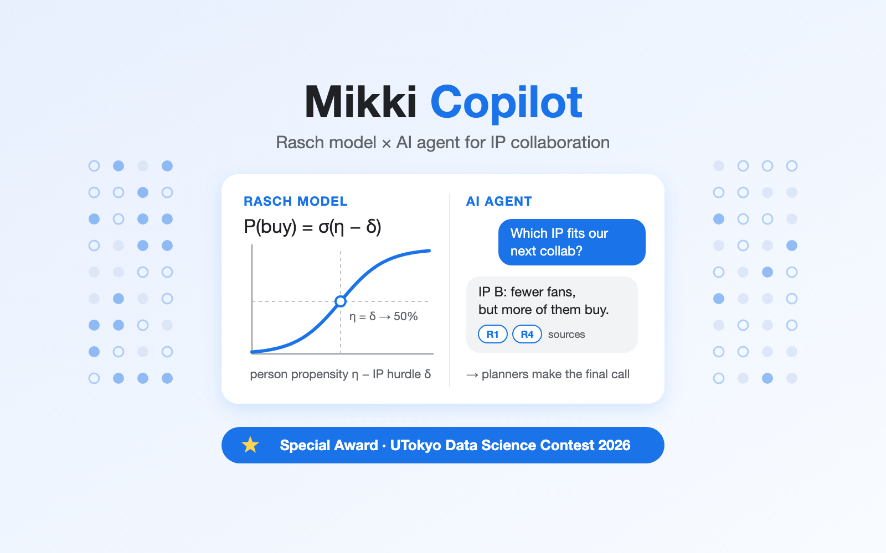
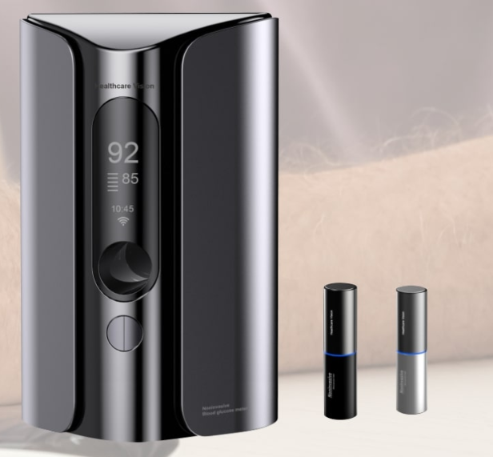

I am a PhD candidate at the University of Tokyo (UTokyo), HeiLab, advised by Prof. Shin'ichi Warisawa and Associate Prof. Yuki Ban. My research focuses on developing quantitative indicators of sleep quality by integrating biosignals such as EEG, ECG, EDA, and respiration.
I am also studying how sleep environments can be adaptively controlled using air conditioners and other devices to regulate thermal comfort during sleep and improve recovery.
My interests include sleep science, human-computer interaction, biosignal analysis, and AI-driven healthcare technologies.
I also bring hands-on experience in RAG system design, AI engineering, and computer vision with vision-language models, and am an active member of the early-stage startup Elephane (elephane.ai), focused on embodied AI and next-generation wearable sensing.
Keywords: Sleep science, Biosignal processing (EEG / ECG / EDA / respiration), Machine learning & Transformer models, Human–computer interaction, AI-driven healthcare, Wearable sensing, Thermal comfort & adaptive environment control, LLM / RAG systems, Computer vision & vision-language models (VLM / SAM)
東京大学大学院（HeiLab）の博士課程に在籍しており、割澤伸一教授・伴祐樹准教授の指導のもと、脳波・心電・皮膚電位・呼吸などの生体情報を用いた睡眠の質の定量評価指標の開発に取り組んでいます。
加えて、睡眠中の温熱快適性と回復を高めることを目的として、空調などの睡眠環境機器を用いた適応的な睡眠環境制御についても研究しています。
研究分野：睡眠科学、ヒューマンコンピュータインタラクション、生体信号解析、AI医療技術。
RAGシステムの設計・実装やAIエンジニアリング、VLM（視覚言語モデル）を用いた画像認識の実務経験も持ち、具身AIと次世代ウェアラブルセンシングに取り組むスタートアップElephane（elephane.ai）のチームメンバーとして活動しています。
研究キーワード：睡眠科学、生体信号処理（脳波・心電・皮膚電位・呼吸）、機械学習・Transformerモデル、ヒューマンコンピュータインタラクション、AIヘルスケア、ウェアラブルセンシング、温熱快適性・適応的環境制御、LLM・RAGシステム、コンピュータビジョン・視覚言語モデル（VLM / SAM）
我是东京大学（HeiLab）博士生，在割澤伸一教授与伴祐树副教授的指导下进行研究。我的研究旨在通过脑电、心电、皮肤电反应与呼吸等多模态生理信号，开发用于量化睡眠质量的指标。
此外，我也在研究如何利用空调等睡眠环境设备，对睡眠过程中的热舒适环境进行自适应调节，从而改善睡眠质量与恢复效果。
研究方向包括睡眠科学、人机交互、生物信号分析，以及AI在医疗健康领域的应用。
我同时具备RAG系统设计、AI工程以及基于视觉语言模型（VLM）的计算机视觉方面的实践经验，并作为团队成员参与具身AI与新一代可穿戴感知方向的初创公司Elephane（elephane.ai）的早期建设。
研究关键词：睡眠科学、生理信号处理（脑电・心电・皮肤电・呼吸）、机器学习与Transformer模型、人机交互、AI医疗健康、可穿戴感知、热舒适与自适应环境控制、LLM / RAG系统、计算机视觉与视觉语言模型（VLM / SAM）
Projects
研究プロジェクト
研究项目




Education
学歴
教育背景
Research Topic: Quantification of sleep quality and cognitive recovery using biosignals (EEG, ECG, EDA, RESP) and AI modeling.
研究テーマ：睡眠中の生体信号（脳波・心電・皮膚電位・呼吸）を用いた心身回復の可視化とAIモデルによる睡眠質の定量化。
研究方向：利用生理信号（脑电、心电、皮肤电、呼吸）与AI建模对睡眠质量与心身恢复进行定量研究。
Thesis title: Estimating daytime productivity using sleep biosignals with reduced feature complexity.
論文タイトル：特徴量数を削減した睡眠時生体情報による日中生産性の推定。
论文题目：基于特征量简化的睡眠生理信号预测日间生产力。
Thesis title: Seamless Measurement of Upper Limb Muscle Strength in Elderly People Using a Smart Grip Device.
卒業論文：スマートハンドルデバイスを用いた高齢者の上肢筋力のシームレスな測定手法。
毕业论文：基于智能手柄设备的老年人上肢肌肉力量无缝测量方法研究。
Job Experience
職歴
工作经历
In an ongoing joint research project between the University of Tokyo and a road-infrastructure company, I am building a training-free image-segmentation pipeline for infrastructure-inspection photos. Few-shot prompting of a vision-language model (VLM) locates the target, SAM 2.1 extracts it at pixel level, and an automatic verification step re-selects or rejects unreliable masks before they reach downstream condition assessment. A new equipment type can be added with a handful of annotated examples, with no dataset collection or model retraining. Details are confidential until the results are published.
東京大学と道路インフラ関連企業との産学共同研究として、インフラ点検写真向けの学習不要な画像セグメンテーション・パイプラインを構築しています。VLM（視覚言語モデル）のFew-Shotプロンプトで対象を定位し、SAM 2.1で画素単位の領域を抽出したうえで、信頼度の低いマスクは自動検証で再選択・棄却してから後段の状態判定へ渡します。新しい設備の種類も数組の見本だけで追加でき、データセットの収集やモデルの再学習は不要です。成果は未発表のため、詳細は公開していません。
在东京大学与一家道路基础设施相关企业开展的产学共同研究中，我正在为基础设施巡检照片构建一套无需训练的图像分割流程：利用视觉语言模型（VLM）的少样本提示定位目标，再由 SAM 2.1 提取像素级区域，并通过自动校验对低置信度的掩膜进行重选或剔除，之后才交给后续的状态评估。新增一类设备只需少量标注样例，无需收集数据集或重新训练模型。由于成果尚未发表，具体细节暂不公开。
As a Sleep Advisor at Lavie Innovations Pte. Ltd., I worked on launching an employee sleep-health monitoring program for corporate clients, bringing my sleep-science and biosignal research into a workplace wellbeing service.
Lavie Innovations Pte. Ltd. のスリープアドバイザー（睡眠専門家）として、法人顧客向けの「従業員睡眠健康モニタリングプログラム」の立ち上げに取り組みました。睡眠科学・生体信号解析の研究知見を、職場のウェルビーイング向けサービスへと展開しました。
作为 Lavie Innovations Pte. Ltd. 的睡眠顾问（睡眠专家），负责了面向企业客户的「员工睡眠健康监测项目」的启动与搭建，将睡眠科学与生理信号解析的研究成果转化为面向职场健康的服务。
As a data scientist, developed algorithms to quantify and visualize the relationship between employees' movement and behavior patterns in the office and their work productivity. For long-term, large-scale experimental data, I formulated hypotheses grounded in prior research and ran iterative statistical validation, deriving insights that contribute to office design and employee performance. By communicating closely with the client to align on the goals and direction of the analysis, I connected the results directly to practical business needs. The findings were presented at JSAI 2026, and the joint research with Itoki was featured in a press release (July 2026).
株式会社松尾研究所にて、データサイエンティストとして、オフィス内の従業員の移動・行動パターンと業務生産性の関係を定量化・可視化するアルゴリズムの開発に従事しました。長期間・大規模な実験データに対して先行研究をもとに仮説を立案し、統計的検証を繰り返すことで、オフィス設計および従業員のパフォーマンス向上に貢献する知見を導出しました。クライアントと密にコミュニケーションを取り、分析の目的・方向性について認識を合わせながら進めることで、成果を実務ニーズに直結させました。成果はJSAI2026にて発表し、本共同研究はイトーキとのプレスリリース（2026年7月）でも紹介されました。
在株式会社松尾研究所担任数据科学家，从事将办公室内员工的移动·行为模式与工作生产力关系进行量化与可视化的算法开发。针对长期、大规模的实验数据，基于先行研究提出假设并反复进行统计验证，导出有助于办公空间设计与员工绩效提升的洞见。通过与客户密切沟通、对齐分析的目的与方向，使成果直接对接实务需求。成果在 JSAI2026 上发表，本次与 itoki 的共同研究也在新闻稿（2026年7月）中被报道。
At Metatech, developed an AI reception system that combines AI with metaverse technology. To address labor shortages in the service industry, I implemented a mechanism that switches between dedicated databases for each use case (hotels, tourist spots, schools, etc.) to generate responses, and built voice-recognition-based inquiry handling and facility-guidance features. The demo was exhibited at the Teamz Web3 Summit in April 2025.
株式会社metatechにて、AIとメタバース技術を組み合わせたAIレセプション（AI受付システム）の開発に取り組みました。サービス業界における人手不足に対応するため、利用シーン（ホテル・観光地・学校など）ごとに専用データベースを切り替えて応答する仕組みを実装し、音声認識による問い合わせ対応・施設案内機能を構築しました。デモ版は2025年4月のTeamz Web3 Summitにて展示しました。
在 metatech 从事结合AI与元宇宙技术的AI接待系统（AI前台）开发。为应对服务行业的人手短缺，实现了按使用场景（酒店、景区、学校等）切换专用数据库进行应答的机制，并构建了基于语音识别的咨询应答与设施引导功能。演示版于2025年4月的 Teamz Web3 Summit 展出。
In the Co-creation Space Design Project at the University of Tokyo's RIISE, I conducted research on realizing restful sleep environments. By analyzing multiple types of biosignals during sleep—ECG, EDA, respiration, and body movement—I quantitatively clarified the conditions for high-quality sleep that improves next-day productivity. Building on these findings, I developed and validated a real-time, biosignal-driven automatic air-conditioning control system, presenting the results at 5 international and 3 domestic conferences (publications).
東京大学 インクルーシブ工学連携研究機構（RIISE）共創空間デザインプロジェクトにて、研究補佐として快眠環境の実現に関する研究に従事しました。睡眠中の心電・皮膚電位・呼吸・体動といった多種類の生体信号を解析し、翌日の生産性向上につながる良質な睡眠の条件を定量的に解明しました。さらに、その知見に基づいてリアルタイム生体情報を用いたエアコン自動制御システムを構築・効果検証し、国際学会5件・国内学会3件にて成果を発表しました。
在东京大学 包容性工学协同研究机构（RIISE）「共创空间设计」项目中担任研究助理，从事舒适睡眠环境实现的研究。通过分析睡眠中的心电、皮肤电位、呼吸、体动等多种生理信号，定量阐明了有助于提升次日生产力的优质睡眠条件。并基于这些发现构建并验证了利用实时生理信息的空调自动控制系统，成果在5场国际会议与3场国内会议上发表。
At Healthcarevision, developed a non-invasive optical blood glucose measurement algorithm. By illuminating a fingertip and using the spectrum of light reflected from the blood vessels as training data, I built a machine learning model that estimates blood glucose without needles. The system ultimately achieved an estimation accuracy within ±15%, and the device featuring this algorithm was exhibited to acclaim at CES 2024.
株式会社Healthcarevisionにて、非侵襲的光学式血糖値計測アルゴリズムの開発に従事しました。指に光を照射し、血管からの反射光スペクトルを学習データとして機械学習モデルを構築することで、針を刺さずに血糖値を推定するシステムを実現しました。最終的に±15%以内の推定精度を達成し、本アルゴリズムを搭載したデバイスは2024年のCESにて展示・好評を博しました。
在 Healthcarevision 从事非侵入式光学血糖测量算法开发。通过向手指照射光线，将血管反射光谱作为训练数据构建机器学习模型，实现无需针刺的血糖估计。最终达到±15%以内的估计精度，搭载该算法的设备在2024年的 CES 上展出并广受好评。
Publications
発表
发表论文
International Conferences
国際会議
国际会议
Domestic Conferences
国内会議
国内会议
Awards & Honors
受賞歴
获奖荣誉
Startup & Community Involvement
スタートアップ・コミュニティ活動
创业与社区参与
Contributing to an early-stage startup focused on two verticals: GEO/AI-era web services for brand visibility in LLM search environments, and embodied AI hardware including AI glasses and BCI wearables. Responsible for the sensing and physiological signal processing direction.
2つの事業領域に取り組む初期段階のスタートアップに参画しています。ひとつはLLM検索環境でのブランド露出を高めるGEO/AIウェブサービス、もうひとつはAIメガネやBCIウェアラブルを含む具身AIハードウェアです。センシングおよび生理信号処理の方向性を担当しています。
参与一家处于早期阶段的初创公司，聚焦两个方向：面向LLM搜索环境的GEO/AI时代品牌可见性网络服务，以及包括AI眼镜和BCI可穿戴设备的具身AI硬件。负责感知与生理信号处理方向。
Skills
スキル
技能
Languages
言語
语言
- Chinese (Native)中国語（ネイティブ）中文（母语）
- Japanese (Business)日本語（ビジネス）日语（商务）
- English (Business)英語（ビジネス）英语（商务）
Programming & AI
プログラミング・AI
编程与AI
- Python, PyTorch, TensorFlow, scikit-learn
- MATLAB, R, C++
- Signal Processing, Time-series Analysis, LLM/Hugging Face API
- RAG system design (chunk optimization, vector DB: Chroma / FAISS / Pinecone / pgvector)RAGシステム設計（チャンク最適化、ベクトルDB：Chroma / FAISS / Pinecone / pgvector）RAG系统设计（分块优化，向量数据库：Chroma / FAISS / Pinecone / pgvector）
- Multimodal biosignal fusion & real-time physiological signal acquisition (Biosignalsplux)マルチモーダル生体信号融合・リアルタイム生理信号取得（Biosignalsplux）多模态生物信号融合与实时生理信号采集（Biosignalsplux）
- Computer vision (SAM 2.1 segmentation, few-shot VLM prompting, OpenCV)画像認識（SAM 2.1によるセグメンテーション、VLMのFew-Shotプロンプト、OpenCV）计算机视觉（SAM 2.1分割、VLM少样本提示、OpenCV）
Tools & Platforms
ツール・プラットフォーム
工具与平台
- VS Code, Jupyter, GitHub
- Unity, OpenCV, TouchDesigner
- Adobe Photoshop, Canva
- Firebase, AWS (Polly, S3), Google Colab
Soft Skills & Presentation
ソフトスキル・発表力
软技能与展示能力
- English debate (Icho Cup top 16 & 8)英語ディベート（イチョウ杯 ベスト16・ベスト8）英语辩论（银杏杯 16强・8强）
- Research presentation & poster creation研究発表・ポスター作成研究汇报与海报制作
- Interdisciplinary teamwork & project management学際的チームワーク・プロジェクトマネジメント跨学科团队协作与项目管理
Contact
連絡先
联系方式
- shizukurocalicocat@gmail.com / wang.chijing@s.h.k.u-tokyo.ac.jp
- University of Tokyo, Tokyo, Japan東京大学, 東京, 日本东京大学，东京，日本
- Graduate School of Frontier Sciences新領域創成科学研究科新领域创成科学研究科